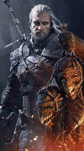
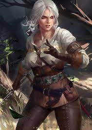
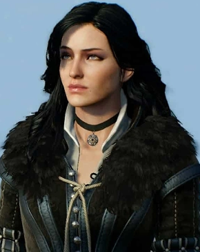
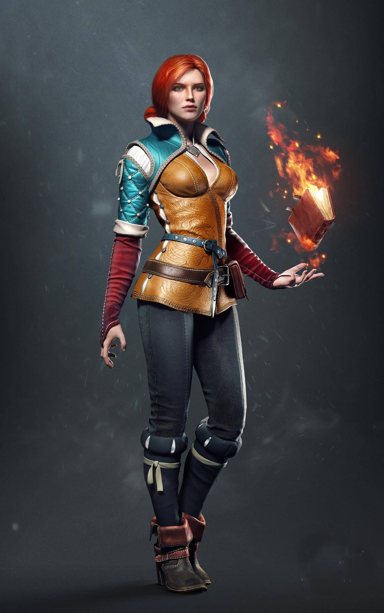
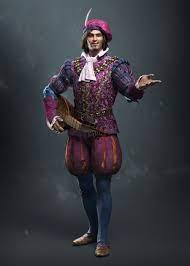
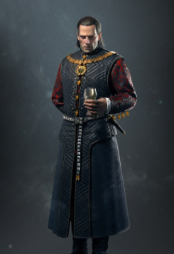
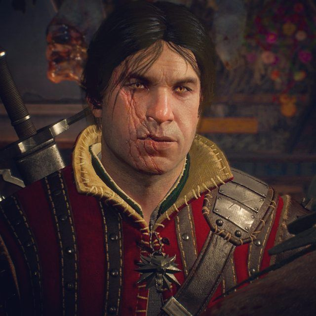
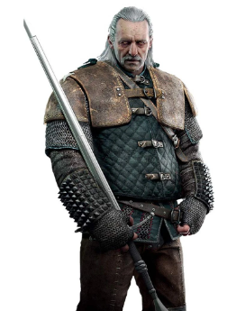

Characters
Geralt of Rivia
Geralt of Rivia was a legendary witcher of the School of the Wolf active throughout the 13th century. He loved the sorceress Yennefer, considered the love of his life despite their tumultuous relationship, and became Ciri's adoptive father.
During the Trial of the Grasses, Geralt exhibited unusual tolerance for the mutagens that grant witchers their abilities. Accordingly, Geralt was subjected to further experimental mutagens which rendered his hair white and may have given him greater speed, strength, and stamina than his fellow witchers.
Despite his title, Geralt did not hail from the city of Rivia. After being left with the witchers by his mother, Visenna, he grew up in their keep of Kaer Morhen in the realm of Kaedwen. In the interest of appearing more trustworthy to potential clients, young witchers were encouraged to make up surnames for themselves by master Vesemir. As his first choice, Geralt chose "Geralt Roger Eric du Haute-Bellegarde", but this choice was dismissed by Vesemir as silly and pretentious, so "Geralt" was all that remained of his chosen name. "Of Rivia" was a more practical alternative and Geralt even went so far as to adopt a Rivian accent to appear more authentic. Later, Queen Meve of Lyria knighted him for his valor in the Battle for the Bridge on the Yaruga conferring on him the formal title "of Rivia", which amused him.He, therefore, became a true knight.
Click for more
Ciri

Cirilla Fiona Elen Riannon (better known as Ciri), was born in 1252 or 1253, and most likely during the Belleteyn holiday. She was the sole princess of Cintra, the daughter of Pavetta and Emhyr var Emreis (who was using the alias "Duny" at the time) as well as Queen Calanthe's granddaughter.
After Geralt of Rivia helped lift Duny's curse, Duny asked what reward the witcher would like and Geralt invoked the Law of Surprise, as it turned out Pavetta was pregnant with Ciri, unbeknownst to Duny.
Click for more
Yennefer

Yennefer of Vengerberg, born on Belleteyn in 1173, was a sorceress who lived in Vengerberg, the capital city of Aedirn. She was Geralt of Rivia's true love and a mother figure to Ciri, whom she viewed like a daughter to the point that she did everything she could to rescue the girl and keep her from harm.
She helped advise King Demavend of Aedirn (though was never a formal royal advisor), a close friend of Triss Merigold, and the youngest member of the Council of Wizards within the Brotherhood of Sorcerers. After its fall, the Lodge of Sorceresses attempted to recruit her, but they didn't see eye to eye as the Lodge wanted to advance their own political agenda by using Ciri.
Click for more
Triss Merigold

Triss Merigold of Maribor was a legendary Temerian sorceress of the 13th century. Called Fourteenth of the Hill by her contemporaries because she was erroneously thought to have been killed during the Battle of Sodden Hill, she passed into history as Merigold the Fearless. A member of King Foltest's royal council along with Fercart and Keira Metz, as well as a founding member of the Lodge of Sorceresses, she was involved in politics for most of her life.
She was friends with Yennefer and the witcher Geralt of Rivia, but also unhappily in love with the latter. Triss took care of Ciri at Kaer Morhen for some time and is like an older sister to her. It was through her intervention that Ciri was not subjected to harmful hormone changes at Kaer Morhen, stripping her of her secondary gender traits.
She was a skilled healer and carried with her many magical potions, but she never used them on herself because ironically, she was allergic to potions, and used amulets to treat herself. She was also quite a powerful mage, certainly when it counted most. She wore an amulet - sapphire overlaid with silver.
Click for more
Dandelion

Julian Alfred Pankratz, Viscount de Lettenhove, better known as Dandelion (Polish: Jaskier), was a poet, minstrel, bard, and close friend of Geralt of Rivia.
n the mid-to-late 1240s, Dandelion first met Geralt at a fête in the town of Gulet in Aedirn. There, the poet had knocked up a girl under the musician's podium, and her four sturdy brothers were looking for him all over town, threatening to geld him and cover him in pitch and sawdust.
The so called Valley of Flowers seemed just right the right location for the duo's swift escape, as it was supposed to be the edge of the inhabited world, the last outpost of civilization. It was in the small town of Upper Posada, located in a part of the Northern Realms that later became Dol Blathanna, that the pair had their first adventure together, involving a nasty Sylvan and an encounter with Dol Blathanna's native inhabitants, the Elves. During this adventure, Dandelion received his priceless lute from Toruviel.
Click for more
Emhyr var Emreis

Emhyr var Emreis, Deithwen Addan yn Carn aep Morvudd (Nilfgaardian language: The White Flame Dancing on the Barrows of his Enemies), also known to a few under his alias as Duny, the Urcheon of Erlenwald (Polish: Jeż z Erlenwaldu) was Emperor of the Nilfgaardian Empire, Lord of Metinna, Ebbing, Gemmera, and Sovereign of Nazair and Vicovaro from 1257 until his death sometime in the late 13th century. He also became the King of Cintra after marrying a false Cirilla in 1268.
His rule of Nilfgaard was highly aggressive, often pursuing expansionist policies similar to those of his predecessors. This led to the outbreak of two wars against the Northern Kingdoms, both of which he lost. Emhyr var Emreis was an intelligent and brilliant ruler. He chose his people well and crushed many plots against him. He was ruthless toward traitors and moved towards his goals with great determination.
He was publicly favorable to the Elder Races, in stark contrast to monarchs of the North.
Click for more
Eskel

Eskel was a witcher of the School of the Wolf taught by Master Vesemir at Kaer Morhen and active in the 13th century. As the sorceress Triss Merigold noticed, Eskel emanated a strong magic aura. Though less famous than his peer Geralt of Rivia, Eskel became renowned in his own right as a professional, reliable witcher, and possessing a kind and relaxed disposition.
Eskel and the White Wolf were like brothers. Side by side they grew up, enjoyed pastime activities and endured the Trials. A good friend of younger Lambert and Coën of Poviss, Eskel saw Vesemir as both a mentor and a father figure. He returned to Kaer Morhen each winter to swap tales and rejuvenate for The Path.
Click for more
Vesemir

Vesemir was the oldest and most experienced witcher at Kaer Morhen in the 13th century and acted as a father figure to Geralt and the other witchers. Like many of the other witchers, he spent each winter in the fortress and set out on the path when spring arrived.
He was one of the few members of the School of the Wolf to survive the assault on Kaer Morhen. By the 1260s, he was the sole old witcher remaining; however, as he was only a fencing instructor, he didn't possess the knowledge necessary to create new mutagens in order to mutate more disciples into witchers.
Click for more